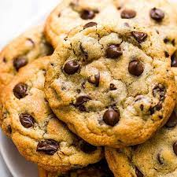

Chocolate Chip Cookies

This simple recipe is great for any occasion!
Ingredients
- 2 1/4 cups of all-purpose flour
- 1 teaspoon of baking soda
- 1 teaspoon of salt
- 1 cup (2 sticks) of butter, softened
- 3/4 cup of granulated sugar
- 3/4 cup of packed brown sugar
- 1 teaspoon of vanilla extract
- 2 large eggs
- 2 cups (12-ounce package) of semi-sweet chocolate chips
Directions
- Preheat oven to 375 degrees.
- Combine flour, baking soda and salt in small bowl.
- Beat butter, granulated sugar, brown sugar and vanilla extract in large mixer bowl until creamy.
- Add eggs, one at a time, beating well after each addition.
- Gradually beat in flour mixture.
- Stir in chocolate chips.
- Drop by rounded tablespoon onto ungreased baking sheets.
- Bake for 9 to 11 minutes or until golden brown.
- Cool on baking sheets for 2 minutes; remove to wire racks to cool completely.